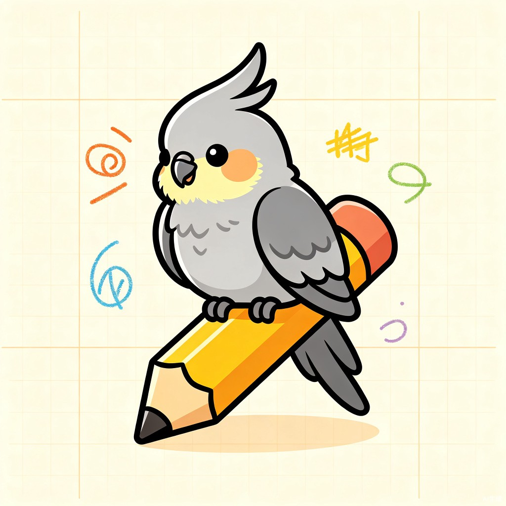

小呆画板
100%
已保存
偏好设置
自定义你的画板体验
小呆画板
版本 v1.0.0
本地 Excalidraw 白板管理工具
基于 Excalidraw 开源项目
使用 Tauri 构建
MIT License
常用快捷键
新建
Ctrl+N
打开
Ctrl+O
保存
Ctrl+S
撤销
Ctrl+Z
重做
Ctrl+⇧+Z
命令
Ctrl+K
侧栏
Ctrl+B
重命名
F2
放大
Ctrl+=
缩小
Ctrl+-